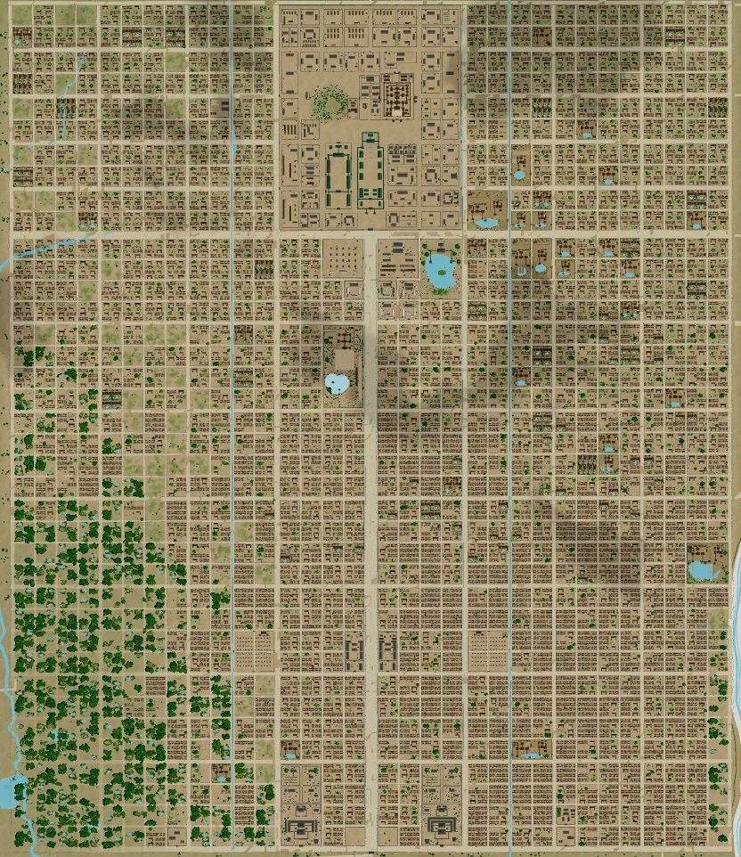
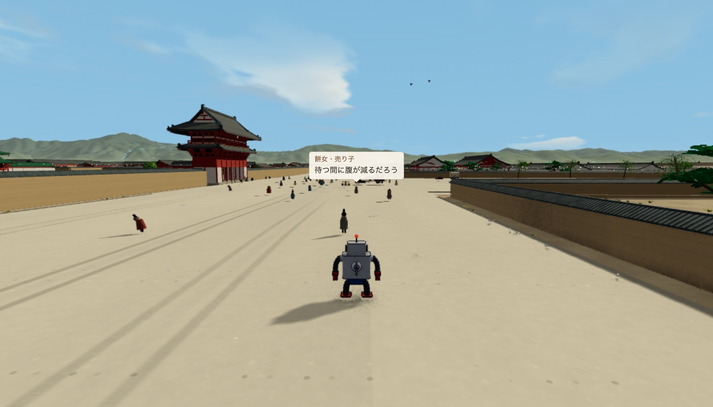

Selected Work — 05
千年前の都を、
調べて作って歩ける形にする
平安京に行ってみたくて、昌泰三年（900）の都を史料と国土地理院の標高データから推定復元し、ブラウザで歩ける箱庭にした。調べたことは、調査ノート28件として公開している。
Why
平安京に行ってみたかった。
千年前の都がどんな町で、人がどう暮らしていたのかを、自分の目で見てみたかった。京都を訪ねても、900年の都はほとんど残っていない。タイムマシンは無いので、それならバーチャルに行けないかと考えて作り始めた。
作るために調べていくと、知っていたつもりのことの見え方が変わった。応天門の変は、門が燃えた事件くらいに覚えていた。応天門は国の儀式を行う朝堂院の正門で、左右に楼を従えた大きな門だった。その前に立って見上げると、事件の重さが違って見える。
What I Made
空から眺め、通りを歩き、町の人と話す。
南北約5.2km・東西約4.5kmの京域を、まわりの山と川の地形ごと作った。ブリキのロボ「鉄の童」になって、ドローンで空から巡り、地上を歩き、すれ違う町の人の話を聞く。勝ち負けや決まった筋はなく、好きな所へ行って過ごせる。
町の人は約3,000人いて、場所・時刻・季節・天気で話が変わる。暦は当時の暦どおりに延喜二十二年（922）まで進み、翌年の正月に菅原道真が都を追われる昌泰の変も迎える。夜空の星は、今の星の位置から地軸のずれを計算して、901年ごろの並びに戻している。台詞はすべて英語でも読める。

How I Checked
史料が少ない街を、どこまで確かかを書き残しながら建てる。
建物と街は、ブラウザで動く3D CAD（CadKit）を自分で作り、それで組み立てた。困ったのは、答え合わせができないことだった。平安京は残っている史料が少なく、寸法のわからない所が多い。
そこで寸法ひとつずつに、どこまで確かかを書き添えた。「規格で決まっている」「ある記録に書かれている」「いくつかの説の中ほどを取った」「自分で推定した」の4段階で、新しい資料が見つかったときは推定の所から直せる。

おかしな所は、プログラムで点検して見つける。屋敷の敷地が川にかかっていないか、邸宅に台所や井戸がそろっているか、といった点検を一つずつ足し、引っかかった所を直していく。

門や道は、点検を通っても歩くと塞がっていることがある。最後はロボで実際に歩いて、通れるかを試している。
すぐ作れるので、先に置いてみて、おかしな所を見てから考えられる。考えてから置いていた順番が入れ替わった。
Research
調べたことも、公開する。
建物・街路・暮らしは、都城図・街路の寸法・発掘資料・古記録を突き合わせて推定した。史料で確かめられる所と推定で補った所を分けて記録し、調査ノート28件を設定資料集にまとめている。対象年代、条坊と建物の配置、身分ごとの居宅と一日、食と衣と道具、都へ入る人と物の流れまでを扱う。
Who It's For
授業や創作の資料にも使える。
教科書の都城図を、立体の街並みにして授業で映せる。閲覧と、授業や勉強会での紹介は自由にしている。建物や通りを好きな角度から撮って、漫画やイラストの背景にもできる。撮影モードには、墨線と網点の劇画調もある。
